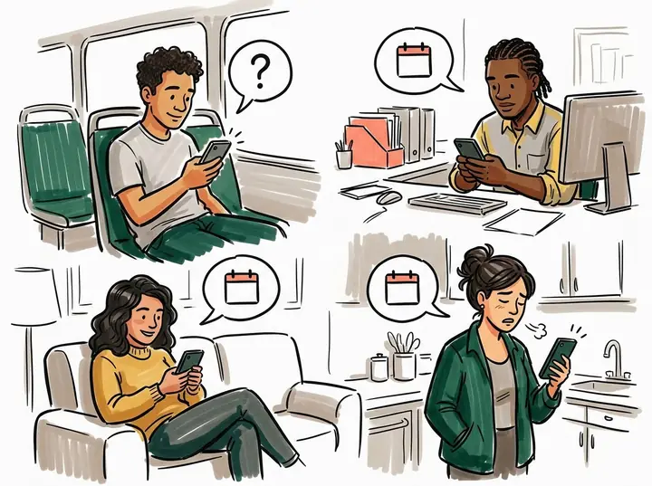
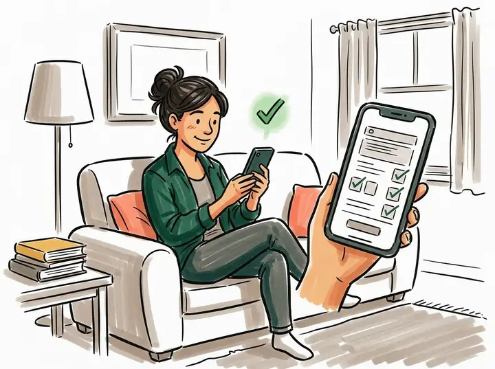
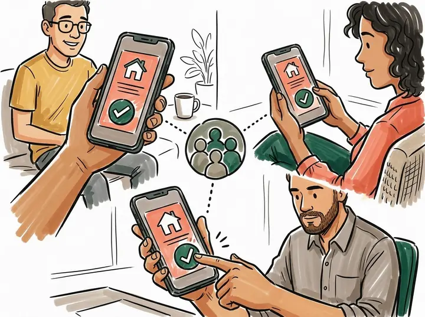
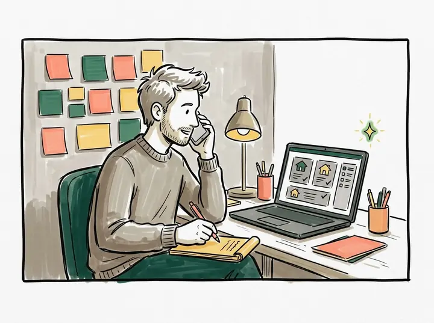
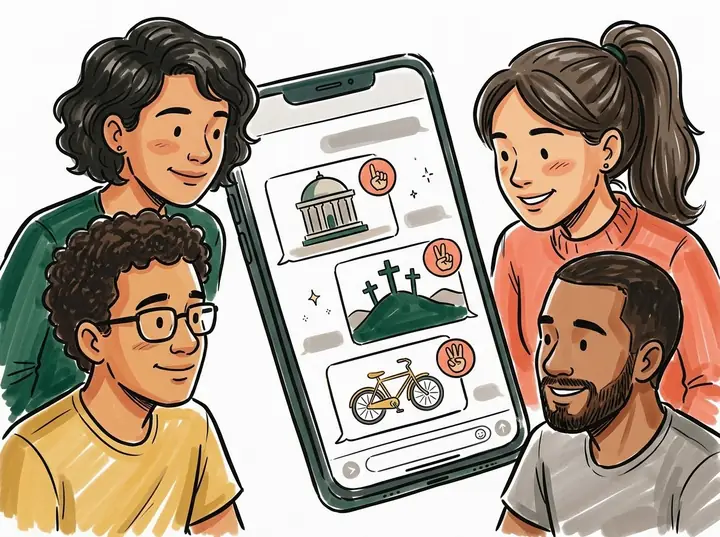
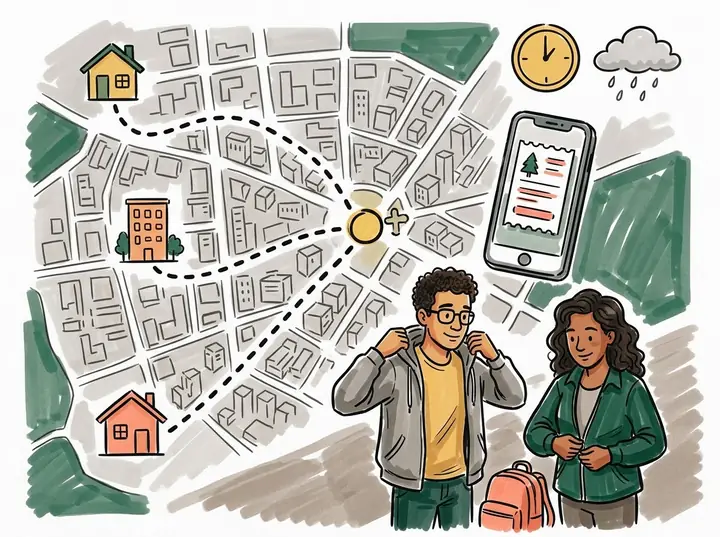
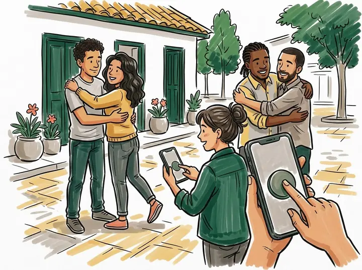
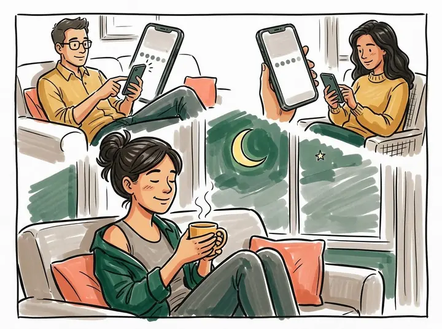

Piloto en Cali
Menos vueltas, más plan.
Para cuando el parche dice «hay que vernos» y nadie concreta. Sintonía es su +1 de confianza en el WhatsApp del grupo: propone el plan, concilia la votación y lo cierra con día y hora.
Cómo funciona
Para parches que ya existen: amigos, familia o pareja, de 3 a 6 personas. Ustedes ponen las ganas; Sintonía pone el plan.

En el chat todos dicen «hay que vernos» y nadie concreta.

Quien organiza inscribe al parche en un par de minutos.

Cada persona acepta su invitación con un enlace.

Sintonía arma 3 planes con lugares verificados de Cali.

El parche vota en una encuesta del grupo de WhatsApp.

Queda cerrado el día, la hora y hasta cuándo confirmar.

Se encuentran, y con un toque avisan que ya llegaron.

«Ya en casa», y una encuesta corta para el próximo plan.
Qué es
- Un piloto académico de la Universidad Icesi.
- Lugares de Cali que el equipo revisó uno por uno.
- Un solo chat: el WhatsApp que ya usan.
Qué no es
- Una app para conocer gente nueva.
- Una app de citas.
- Un servicio para menores de 18.
Anótate en la lista de espera
El piloto atiende pocos parches a la vez. Cuando haya cupo, te escribimos por WhatsApp.